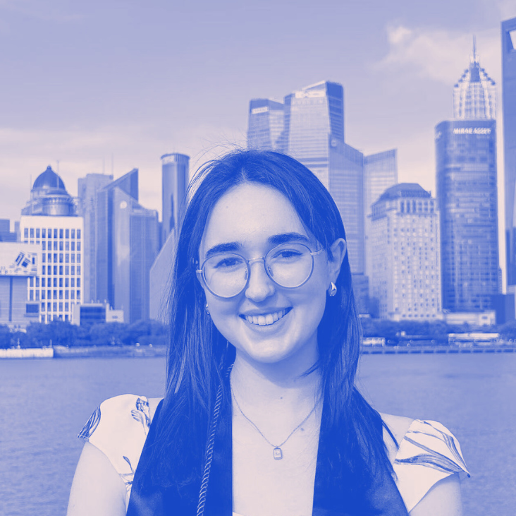

ABOUT

Hello! I’m a first year Master’s student in Urban Planning at Columbia University. Alongside my studies, I’m interning with the MTA’s Queens Bus Redesign team and serving as an Urban Design Fellow at the NYC Department of City Planning, where I explore how highways shape public access to waterfronts. I am also a volunteer Brand & Design Manager for Young Urbanists of Southeast Asia, a pan-Southeast Asian network of young people interested in Southeast Asian urbanism.
I recently graduated from Duke Kunshan University, Duke University’s joint-venture campus in Kunshan, China, where I studied Computation & Design with a track in Social Policy and a concentration in Urban Design (quite a mouthful!). Through this interdisciplinary program, I became deeply interested in the overlaps between technology, human-centered design, and the environments we inhabit. I approach problems with an analytical, data-oriented lens and enjoy using design to communicate insights and tell stories.
My undergraduate experience took me across 3 continents: Durham, NC, Barcelona, Spain, and Kunshan, China. The summer between my junior and senior year, I also spent 3 months living and working in Bangkok, Thailand to explore the Southeast Asian context to urbanism.
I’m strongly mission-driven and have taken on a wide range of roles across the urban planning ecosystem, including urban-tech startups, public-sector agencies, GIS software, and academic research. My experience broadly falls into three areas:
- UI/UX & Visual Design
- I began my career at State of Place, a U.S.-based urban-tech startup using AI to quantify urban design and walkability. As a UI/UX intern, I helped redesign the software interface to make the platform more intuitive for planners, developers, and city-makers.
- In Bangkok, I worked with Urban Studies Lab to design an online platform for Placemaking Thailand, the Thai national chapter under PlacemakingX. The platform aimed to connect Thai design firms, academics, and community members to share best practices in creating human-centered spaces.
- Most recently, at Esri, the world’s leading GIS software company, I contributed to static and interactive maps and data visualizations that showcase how GIS can reveal layers in the world around us.
- Transportation & Mobility
- My interest in transportation began at MuvMi, a tuk-tuk micromobility startup in Bangkok focused on first- and last-mile connectivity. I worked with the operations team on analyzing transit patterns and predicting user trip behavior.
- Currently, I’m exploring transportation planning in the U.S. context through my work with NYC’s MTA, supporting bus network redesign efforts in Queens.
- Urban Design
- At the NYC Department of City Planning, I work with the Urban Design Office to research how design around highways can improve pedestrian access to waterfronts.